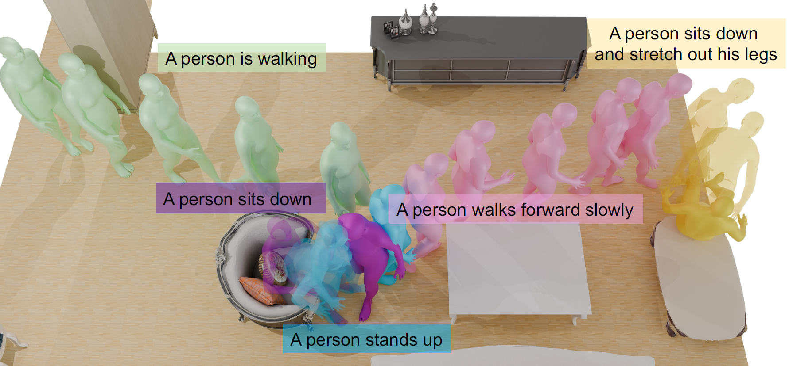

European Conference on Computer Vision (ECCV 2024)
Hongwei Yi (1, 2)Justus Thies (2, 3)Michael J. Black (2)Xue Bin Peng (1, 4), Davis Rempe (1)
(1) NVIDIA(2) Max Planck Institute for Intelligent Systems, Tubingen, Germany(3) Technical University of Darmstadt(4) Simon Fraser University

Abstract
We present TeSMo, a method for text-controlled scene-aware
motion generation based on denoising diffusion models. Previous textto-
motion methods focus on characters in isolation without considering
scenes due to the limited availability of datasets that include motion,
text descriptions, and interactive scenes. Our approach begins with
pre-training a scene-agnostic text-to-motion diffusion model, emphasizing
goal-reaching constraints on large-scale motion-capture datasets. We
then enhance this model with a scene-aware component, fine-tuned using
data augmented with detailed scene information, including ground plane
and object shapes. To facilitate training, we embed annotated navigation
and interaction motions within scenes. The proposed method produces
realistic and diverse human-object interactions, such as navigation and
sitting, in different scenes with various object shapes, orientations, initial
body positions, and poses. Extensive experiments demonstrate that
our approach surpasses prior techniques in terms of the plausibility of
human-scene interactions, as well as the realism and variety of the generated
motions.
@inproceedings{
petrovich24stmc,
title = {Multi-Track Timeline Control for Text-Driven 3D Human Motion Generation},
author = {Petrovich, Mathis and Litany, Or and Iqbal, Umar and Black, Michael J. and Varol, G{\"u}l and Peng, Xue Bin and Rempe, Davis},
booktitle = {CVPR Workshop on Human Motion Generation},
year = {2024}
}